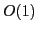

A new multigrid solver for finding many eigen functions of the 2D Schrodinger operator is discussed. The solver employs multiscale eigenbasis whcih means an accurate representation of the finest-grid problem by an increasingly larger set of increasingly smaller eigen problems as the solver proceeds to coarser grids. Finally, on the coarsest grid many eigen problems, each of size , solved, collectively producing accurate approximations to all finest-grid eige pairs. The algorithm is built in an adaptive algebraic framework, using Brandt's least squares approach for prolongation operators, and Galerkin method for building coarse-grid operators.